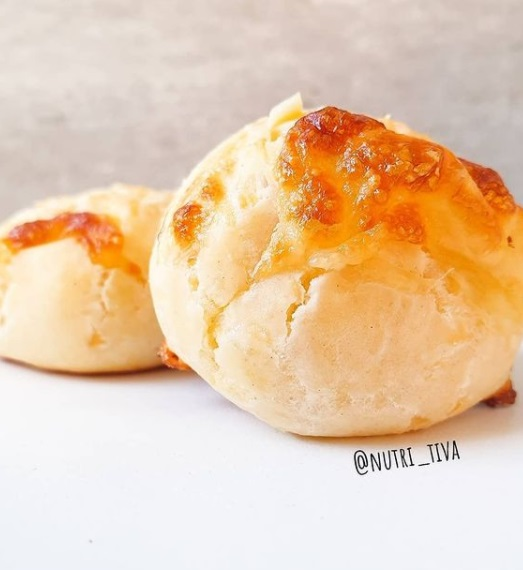

Chipa saludable? Pues si❗
Antes que nada ⛔ guardate esta receta porque la vas a querer hacer una y otra vez! 😍
Mira lo que son estos chipacitos, me crees que no tienen nada de manteca? ❌ Seguí leyendo que te cuento como los hice! 💕
Vamos a necesitar:
- 🧀 1 y 1/2 taza de fecula de mandioca
- 🧀 100 g de queso (yo use una mezcla de queso mar del plata y queso por salut light
- 🧀 1/4 taza de leche
- 🧀 2 cdas de queso untable
- 🧀 1 huevo
- 🧀 Un chorrito de aceite de oliva
- 🧀 Sal
- Pasos a seguir? Solo hay 2 🙌
- ✅ Incorporar todos los ingrefientes y formar bolitas
- ✅Cocinarlas durante unos 15 - 20 minutos aprox en un horno moderado
- ➡️ Tip: podes dejarlos descansar un ratito en la heladera antes de cocinarlos si queres 😁
Juro que no tienen nada que envidiarle a los orishinal 😂
Haganlos y me cuentan 😍